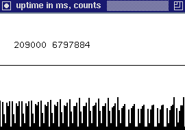

Input data for the Perfometer were generated by running PerfAPI counter for PAPI_FP_INS on a set of loops ( using a small c program named writeCts.c ) with a timing interval of 1000 ms.
The underlying platform was a linux machine with 200MHz chip.
These results were stored in array form inside the program PerfometerApplet.java, for secure use by the applet.
You can dynamically generate your own Perfometer results by:
1. Installing PerfAPI on your system.
Click here for PerfAPI home.
2. Using a program similar to writeCts.c to generate counts.
Click here for writeCts.c code.
|
To the right is a snapshot of the display created by the java application program
Perfometer.java.
The first number [209000] is time in milliseconds. The second number [6797884] is raw counts on PAPI_FP_INS for the 1000 ms timing interval starting at 209000. The bars in the histogram should reflect the latest count value, with the newest value coming in on the right. Scaling is based on 2*highest_count_value. |
 |
| If you have a java enabled browser, a running copy of the applet display should appear to the right. This display is created by the program PerfometerApplet.java. |